02.01.02 WEBSITE
I starten af uddannelsen har jeg lært on forskellige brugergrænseflader og grundlæggende metoder og front-end teknologier i at lave websites. Jeg blev introduceret til html, css og har lært hvordan jeg kan opsætte en website helt fra bunden. jeg har lært, at man skal lave altid mobil versionen i starten og bagefter ved hjælp af ”media query” opsætte grids og komponere elementerne på siden. I den første opgave skulle jeg følge opgaven og opsætte siden, som det blev spurgt om. Jeg fik til sidst lov til at delvist arbejde på designet. Jeg valgt farverne i websitet, designede knapperne, valgt fonte og opsat teksten.
SE OPGAVEN


